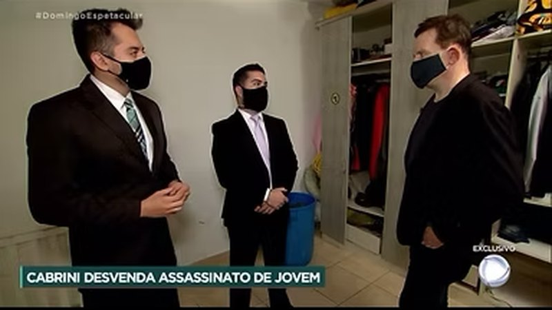

Balanço Geral · Rede Record Entrevista
Entrevista ao Balanço Geral sobre o caso da gamer morta em São Paulo
Conversas revelam relação abusiva entre acusado e vítima. João Marcos comenta o caso como advogado de defesa.
Assistir →Do flagrante aos Tribunais Superiores. Da autuação fiscal ao CARF. Atuação desde 2014, com passagem pelo Ministério Público de São Paulo, pós-graduação em Direito Penal Econômico (FGV/SP) e escritório integrante da lista de advogados da Embaixada dos EUA no Brasil.
Após uma prisão em flagrante, a audiência de custódia acontece em até 24 horas — e é nela que se discute a liberdade. Contar com defesa técnica desde o primeiro momento faz diferença no rumo de todo o processo.
Fale conosco pelo WhatsApp. Um advogado orienta a família, acompanha a lavratura do flagrante e atua na audiência de custódia.
Falar no WhatsAppAdvocacia criminal e tributária com profundidade técnica — e domínio da interseção entre as duas.
Defesa em todas as fases — do inquérito e do flagrante aos recursos nos Tribunais Superiores, incluindo Tribunal do Júri e crimes econômicos.
Ver atuação criminal →Planejamento tributário, recuperação de créditos, parcelamentos estratégicos e contencioso administrativo e judicial — inclusive no CARF.
Ver atuação tributária →Defesa criminal de estrangeiros no Brasil, com atendimento em inglês e espanhol. Escritório integrante da lista de advogados da Embaixada dos EUA.
International clients →Autuações e execuções fiscais podem evoluir para acusações de crime contra a ordem tributária, lavagem de dinheiro e crimes contra o sistema financeiro. São poucas as bancas preparadas para atuar nos dois tabuleiros ao mesmo tempo.
É exatamente nessa interseção que o escritório concentra sua especialização: pós-graduação em Direito Penal Econômico pela FGV/SP, formação em Finanças pela PUC/RS e atuação simultânea no contencioso tributário e na defesa penal empresarial.
Falar sobre o caso da sua empresaAnálise do caso no primeiro contato, com orientação clara sobre riscos e caminhos possíveis.
Estudo aprofundado dos autos e definição da tese, sem soluções de prateleira.
Audiências, sustentações orais, recursos e Habeas Corpus, inclusive no STJ e no STF, em Brasília.
Cliente e família informados a cada movimentação do processo, em linguagem acessível.
O escritório integra a lista de advogados da Embaixada e dos Consulados dos EUA no Brasil, com atuação em casos criminais envolvendo estrangeiros desde 2016 — em inglês, português e espanhol.
A atuação do escritório em casos de repercussão, registrada pela imprensa.
Conversas revelam relação abusiva entre acusado e vítima. João Marcos comenta o caso como advogado de defesa.
Assistir →Mensagens sugerem premeditação. A defesa comenta a investigação ao vivo no programa.
Assistir →
Cabrini reconstitui o caso e entrevista o acusado ao lado da defesa.
Assistir →"Excelente atendimento desde o primeiro contato até a resolução do caso. Sempre muito solícito, tirando todas as dúvidas e nos deixando a par de tudo. Só tenho elogios e agradecimento."
Marta de Farias"Obrigado por dedicar todo o seu esforço e habilidade, e por priorizar o caso. Você estava sempre cuidando. Conheci um excelente advogado."
Gandy AriasCliente internacional — Bolívia"Profissional dedicado e atencioso, sempre disponível para esclarecer dúvidas e acompanhar cada etapa do processo."
Avaliação no Google[substituir por depoimento real do perfil]Procure um advogado imediatamente e não incentive declarações sem defesa técnica presente. A audiência de custódia ocorre em até 24 horas e é o primeiro momento em que a liberdade pode ser discutida. Orientamos a família desde o primeiro contato pelo WhatsApp.
A autuação pode ser contestada administrativa e judicialmente — inclusive no CARF — e, em muitos casos, o passivo pode ser reduzido, parcelado ou compensado com créditos. O importante é agir dentro dos prazos de defesa. Em situações mais graves, a atuação conjunta com a defesa penal evita que a questão fiscal evolua para a esfera criminal.
Sim. A atuação é em todo o território nacional, incluindo Tribunais Superiores em Brasília. O atendimento inicial pode ser feito por videochamada ou WhatsApp.
Sim. O escritório integra a lista de advogados da Embaixada dos EUA no Brasil e atende em inglês, português e espanhol, incluindo contato com familiares no exterior e representações consulares.
O caso é analisado com sigilo absoluto e o cliente recebe uma avaliação honesta dos riscos e das estratégias possíveis, com honorários definidos de forma transparente antes de qualquer contratação.